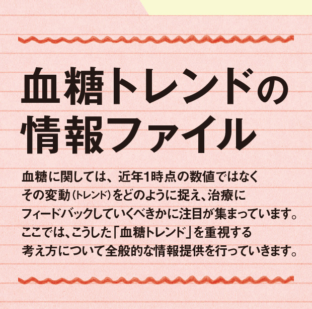

最新ニュース
- 2022/09/07
- CGM(持続血糖測定)は1型糖尿病の人の人生を変える 糖尿病のマネジメントを革新
- 2022/03/14
- 「FreeStyleリブレ」がインスリン療法を行っているすべての糖尿病患者が使えるようになる 糖尿病のより良い管理に期待
- 2019/12/26
- 「糖尿病治療におけるTime in Range(TIR)の重要性と血糖トレンドの活用」を公開 糖尿病リソースガイド
- 2019/04/26
- 「FreeStyleリブレ」の使用目的が改訂 「補助」から変更へ 糖尿病の自己管理に使用
- 2019/03/01
- 運転中の低血糖対策として「FGM」と「リアルタイムCGM」を容認 英国
- 2019/02/01
- 「血糖トレンドを活用した食事療法の可能性」糖尿病リソースガイド
- 2016/11/28
- 「FreeStyleリブレPro」発売 15分ごとに自動でグルコース値を測定